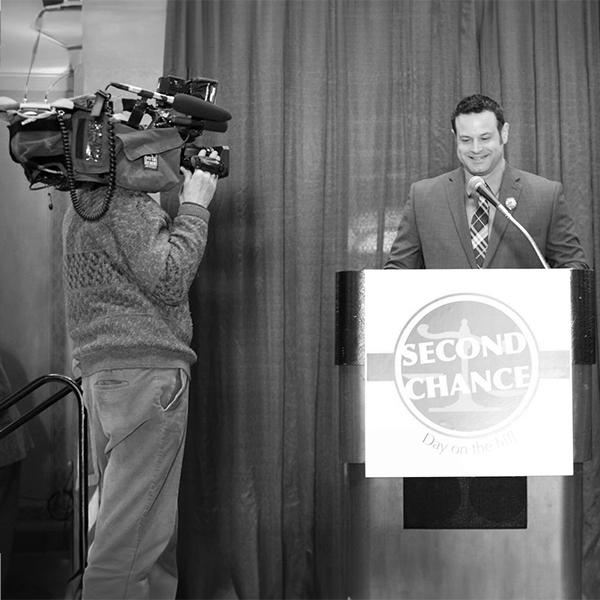
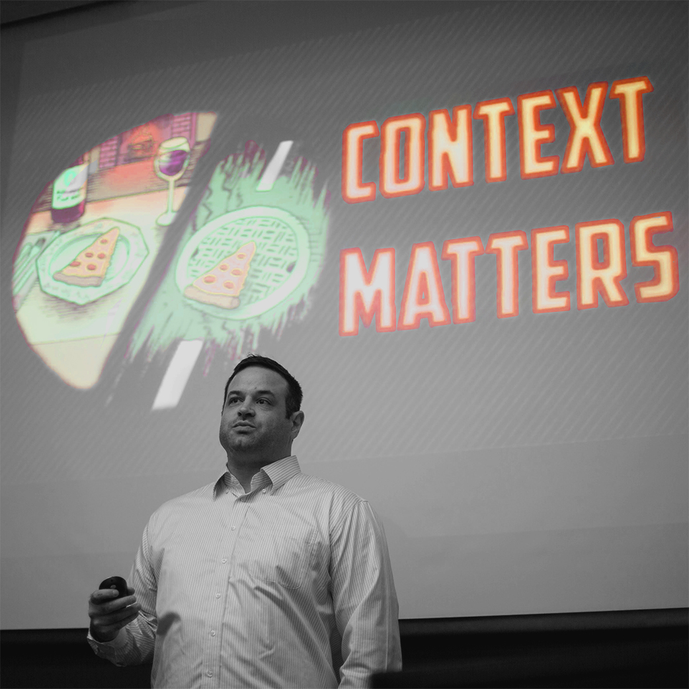

I am a sociologist and criminologist who studies the social, political, and collateral consequences of criminal legal involvement and criminal records for individuals and their communities.
I am an Assistant Professor of Criminology and Criminal Justice at the University of Maryland and a 2022 Emerson Collective Democracy Fellow.
I am an advocate for public social science. I believe that communicating scholarship effectively to policymakers, practitioners, and the public is a fundamental part of the work. Thus, community and university engagement are important aspects of my scholarly profile.

Prior to joining the faculty at Maryland, I served as founding Director of Research and continue to serve on the Research Steering Committee for the Minnesota Justice Research Center, a nonprofit research organization working to improve the justice system through high-quality and accessible research, policy development, and education.
I received my Ph.D. in Sociology from the University of Minnesota, where I was a National Science Foundation Graduate Research Fellow. I also received my M.A. and B.A. in Sociology from UMN and my A.A. from Alexandria Technical College.

In addition to my academic training, I also come to this work with lived experience. In fact, my educational experience only began in earnest while I was incarcerated. My personal experiences with the criminal legal system were undoubtedly affected by my positionality.
My experiences do not make me an expert in punishment and crime; rather, they grant me an additional vantage point from which to understand these issues and generate questions that might not otherwise occur.